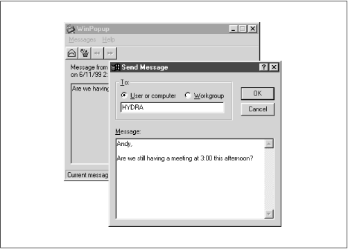

Using Samba
Robert Eckstein, David Collier-Brown, Peter Kelly1st Edition November 1999
1-56592-449-5, Order Number: 4495
416 pages, $34.95
|
|
|
|
|
Using SambaRobert Eckstein, David Collier-Brown, Peter Kelly1st Edition November 1999 1-56592-449-5, Order Number: 4495 416 pages, $34.95 |
8.4 WinPopup Messages
You can use the WinPopup tool ( WINPOPUP.EXE ) in Windows to send messages to users, machines, or entire workgroups on the network. This tool is provided with Windows 95 OSR2 and comes standard with Windows 98. With either Windows 95 or 98, however, you need to be running WinPopup to receive and send WinPopup messages. With Windows NT, you can still receive messages without starting such a tool; they will automatically appear in a small dialog box on the screen when received. The WinPopup application is shown in Figure 8.1.
Figure 8.1: The WinPopup application
Samba has a single WinPopup messaging option,
messagecommand, as shown in Table 8.7.
Table 8.7: WinPopup Configuration Option Option
Parameter
Function
Default
Scope
message commandstring (fully-qualified pathname)
Sets a command to run on Unix when a WinPopup message is received.
None
Global
8.4.1 message command
Samba's
messagecommandoption sets the path to a program that will run on the server when a Windows popup message arrives at the server. The command will be executed using theguestaccountuser. What to do with one of these is questionable since it's probably for the Samba administrator, and Samba doesn't know his or her name. If you know there's a human using the console, the Samba team once suggested the following:[global] message command = /bin/csh -c 'xedit %s; rm %s' &Note the use of variables here. The
%svariable will become the file that the message is in. This file should be deleted when the command is finished with it; otherwise, there will be a buildup of pop-up files collecting on the Samba server. In addition, the command must fork its own process (note the & after the command); otherwise the client may suspend and wait for notification that the command was sent successfully before continuing.In addition to the standard variables, Table 8.8 shows the three unique variables that you can use in a
messagecommand.
Table 8.8: Message Command Variables Variable
Definition
%sThe name of the file in which the message resides
%fThe name of the client that sent the message
%tThe name of the machine that is the destination of the message
 |
 |
 |
| 8.3 Internationalization |
 | 8.5 Recently Added Options |
Back to: Using Samba
© 1999, O'Reilly & Associates, Inc.